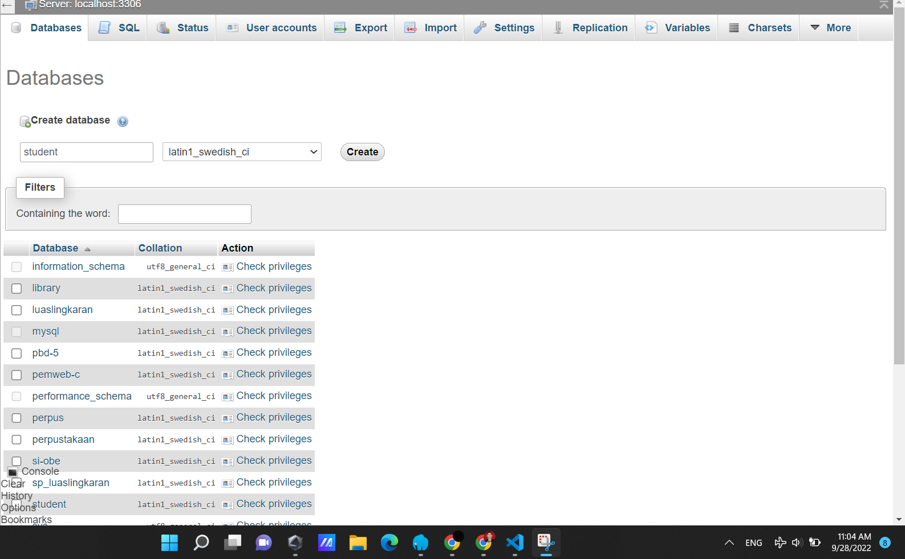
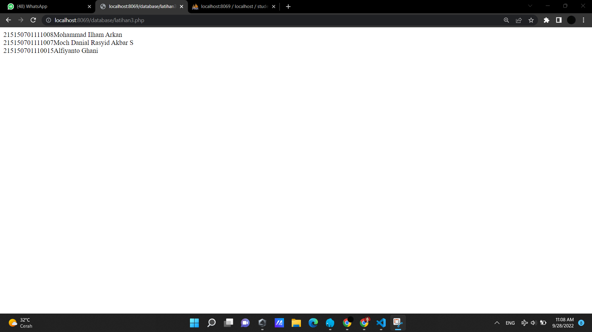
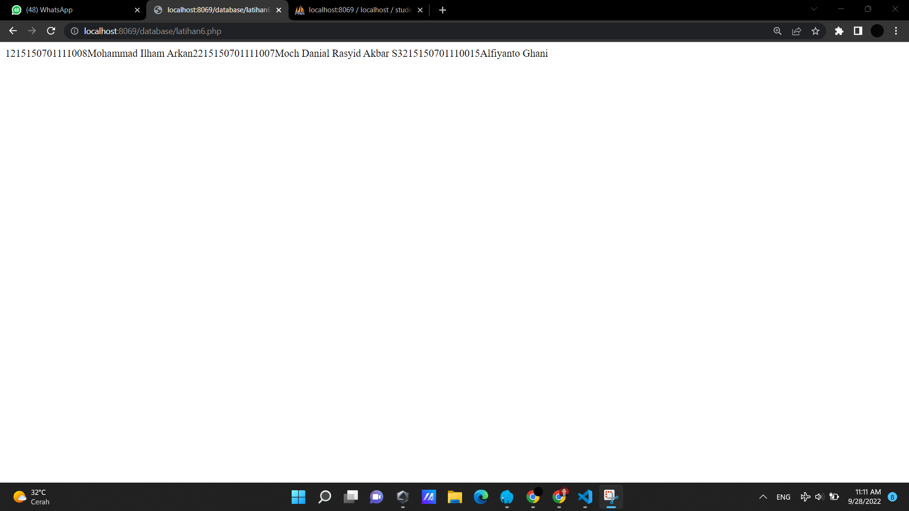
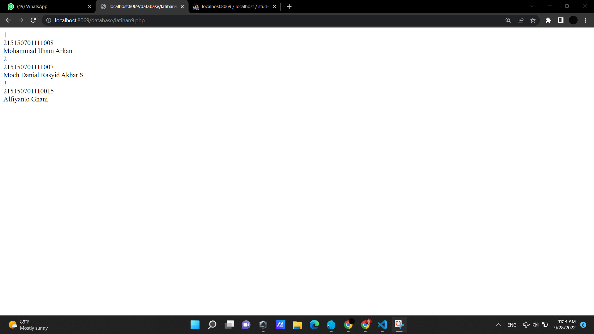
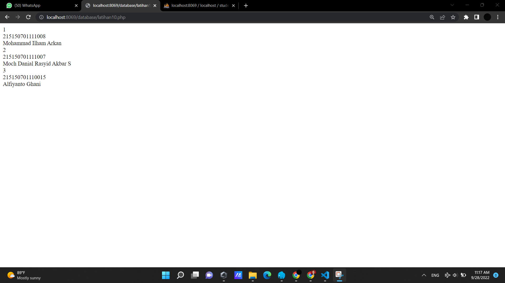
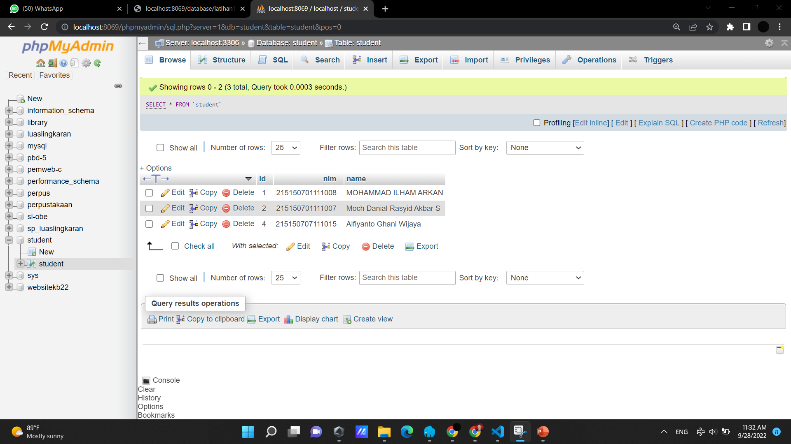
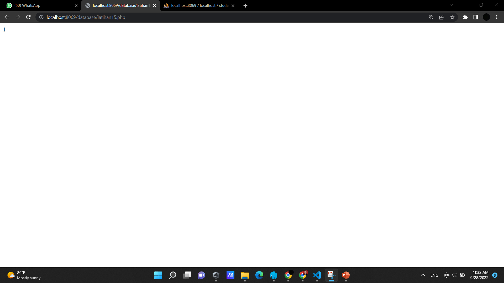
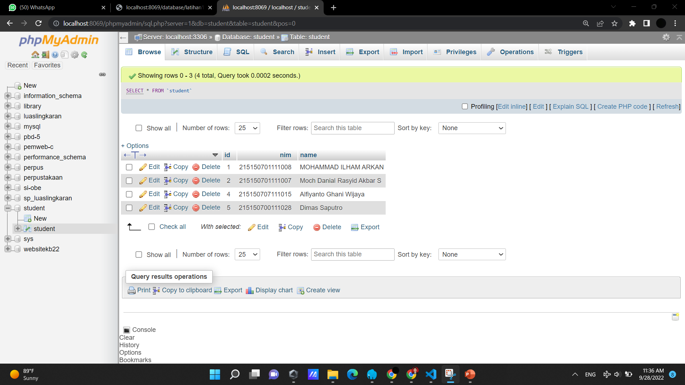
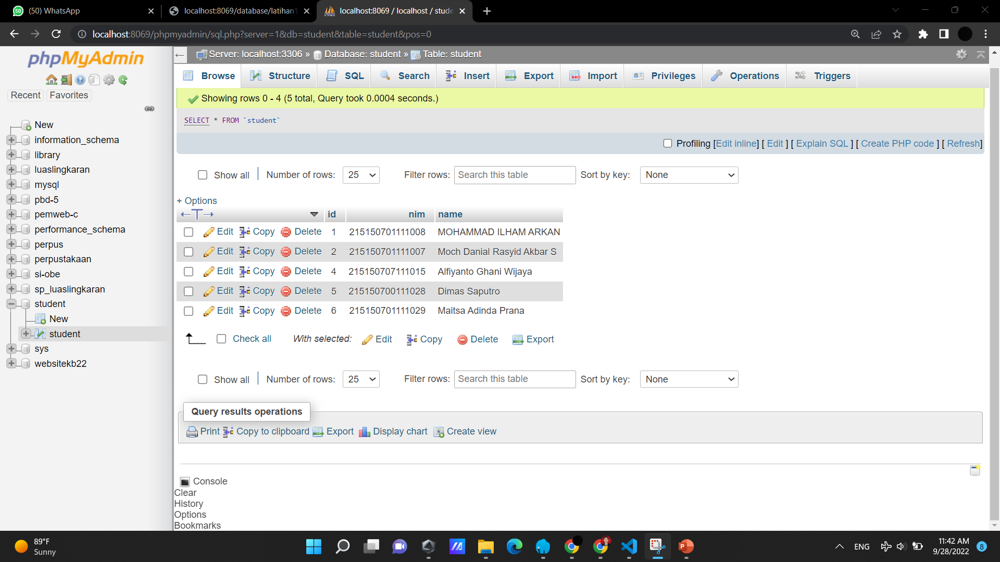

Koneksi Database

Kode program di atas merupakan kode program bahasa PHP untuk membuat objek baru yaitu PDO. interface universal yang disediakan PHP untuk “berkomunikasi” dengan database server. Maksud istilah “interface universal” disini adalah bahwa PDO tidak terikat dengan aplikasi database tertentu. Apabila saat ini kita menggunakan database MySQL dan dikemudian hari ingin bermigrasi menggunakan PostgreSQL, kita hanya tinggal mengganti cara pemanggilan awal PDO dan seluruh kode program yang ada bisa langsung digunakan untuk database baru. Contoh di atas merupakan implementasi PDO dengan database my MySQL. Dalam construct objek PDO, kita dapat melakukan input data yaitu host database yang kita miliki. Secara default, pada device kita memiliki dbhost yaitu localhost. Selanjutnya diikuti nama database yanng ingin dikoneksikan dengan catatan nama database yang diinputkan harus telah tersedia pada database MySQL. Untuk input selanjutnya diisi username serta password dari databaseyang kita miliki.

Gambar di atas merupakan cara untuk membuat databasebaru melalui PHPMyAdmin. Pada kode program sebelumnya, database yang kita inputkan bernama "library". Oleh karena itu supaya prohgram PHP tersebut tidak error ketika dijalankan, maka harus membuat database "library" terlebih dahulu. Ketika database "library" telah dibuat, langkah selanjutnya yaitu menjalankan kode program PHP sebelumnya. Apabila program PHP dan koneksi dengan database "library" sukses dilakukan, maka web browser dengan server lokal yang kita miliki akan menghasilkan output di bawah ini :


Kode program di atas merupakan kode program bahasa PHP untuk membuat objek baru yaitu PDO. interface universal yang disediakan PHP untuk “berkomunikasi” dengan database server. Maksud istilah “interface universal” disini adalah bahwa PDO tidak terikat dengan aplikasi database tertentu. Apabila saat ini kita menggunakan database MySQL dan dikemudian hari ingin bermigrasi menggunakan PostgreSQL, kita hanya tinggal mengganti cara pemanggilan awal PDO dan seluruh kode program yang ada bisa langsung digunakan untuk database baru. Contoh di atas merupakan implementasi PDO dengan database my MySQL. Dalam construct objek PDO, kita dapat melakukan input data yaitu host database yang kita miliki. Secara default, pada device kita memiliki dbhost yaitu localhost. Selanjutnya diikuti nama database yanng ingin dikoneksikan dengan catatan nama database yang diinputkan harus telah tersedia pada database MySQL. Untuk input selanjutnya diisi username serta password dari databaseyang kita miliki.
Kode program diatas bertujuan untuk menangkap kesalahan eror pada kode program yang telah dibuat sebelumnya.Pada kode program sebelumnya, database yang kita inputkan bernama "library". Oleh karena itu supaya prohgram PHP tersebut tidak error ketika dijalankan, maka harus membuat database "library" terlebih dahulu. Ketika database "library" telah dibuat, langkah selanjutnya yaitu menjalankan kode program PHP sebelumnya. Apabila program PHP dan koneksi dengan database "library" sukses dilakukan, maka web browser dengan server lokal yang kita miliki akan menghasilkan output di bawah ini :


Kode program di atas merupakan kode program bahasa PHP untuk membuat objek baru yaitu PDO. interface universal yang disediakan PHP untuk “berkomunikasi” dengan database server. Maksud istilah “interface universal” disini adalah bahwa PDO tidak terikat dengan aplikasi database tertentu. Apabila saat ini kita menggunakan database MySQL dan dikemudian hari ingin bermigrasi menggunakan PostgreSQL, kita hanya tinggal mengganti cara pemanggilan awal PDO dan seluruh kode program yang ada bisa langsung digunakan untuk database baru. Contoh di atas merupakan implementasi PDO dengan database my MySQL. Dalam construct objek PDO, kita dapat melakukan input data yaitu host database yang kita miliki. Secara default, pada device kita memiliki dbhost yaitu localhost. Selanjutnya diikuti nama database yanng ingin dikoneksikan dengan catatan nama database yang diinputkan harus telah tersedia pada database MySQL. Untuk input selanjutnya diisi username serta password dari databaseyang kita miliki.
Kode program diatas bertujuan untuk menangkap kesalahan eror pada kode program yang telah dibuat sebelumnya.Pada kode program sebelumnya, database yang kita inputkan bernama "student". Oleh karena itu supaya program PHP tersebut tidak error ketika dijalankan, maka harus membuat database "student" terlebih dahulu. Setelah itu, inputkan data-data student pada database student yang telah dibuat. Ketika database "student" telah dibuat, langkah selanjutnya yaitu menjalankan kode program PHP sebelumnya. Apabila program PHP dan koneksi dengan database "student" sukses dilakukan, maka web browser dengan server lokal yang kita miliki akan menampilkan nama dan nim mahasiswa yang telah diinputkan ke dalam database student dan menampilkan output seperti di bawah ini :

Kode program di atas merupakan kode program bahasa PHP untuk membuat objek baru yaitu PDO. interface universal yang disediakan PHP untuk “berkomunikasi” dengan database server. Maksud istilah “interface universal” disini adalah bahwa PDO tidak terikat dengan aplikasi database tertentu. Apabila saat ini kita menggunakan database MySQL dan dikemudian hari ingin bermigrasi menggunakan PostgreSQL, kita hanya tinggal mengganti cara pemanggilan awal PDO dan seluruh kode program yang ada bisa langsung digunakan untuk database baru. Contoh di atas merupakan implementasi PDO dengan database my MySQL. Dalam construct objek PDO, kita dapat melakukan input data yaitu host database yang kita miliki. Secara default, pada device kita memiliki dbhost yaitu localhost. Selanjutnya diikuti nama database yanng ingin dikoneksikan dengan catatan nama database yang diinputkan harus telah tersedia pada database MySQL. Untuk input selanjutnya diisi username serta password dari databaseyang kita miliki.
Kode program diatas akan mengambil data dari database student dengan menggunakan query SQL select. Data yang diambil dari database akan dikembalikan ke user berupa associative array. Berbeda dengan sebelumnya pengambilan datanya akan berupa indexing array.


Kode program di atas merupakan kode program bahasa PHP untuk membuat objek baru yaitu PDO. interface universal yang disediakan PHP untuk “berkomunikasi” dengan database server. Maksud istilah “interface universal” disini adalah bahwa PDO tidak terikat dengan aplikasi database tertentu. Apabila saat ini kita menggunakan database MySQL dan dikemudian hari ingin bermigrasi menggunakan PostgreSQL, kita hanya tinggal mengganti cara pemanggilan awal PDO dan seluruh kode program yang ada bisa langsung digunakan untuk database baru. Contoh di atas merupakan implementasi PDO dengan database my MySQL. Dalam construct objek PDO, kita dapat melakukan input data yaitu host database yang kita miliki. Secara default, pada device kita memiliki dbhost yaitu localhost. Selanjutnya diikuti nama database yanng ingin dikoneksikan dengan catatan nama database yang diinputkan harus telah tersedia pada database MySQL. Untuk input selanjutnya diisi username serta password dari databaseyang kita miliki.
Kode program diatas akan mengambil data dari database student dengan menggunakan query SQL selectdan FETCH_NUM bawaan dari class atau objek PDO. Sesuai namanya, FETCH_NUM berfungsi untuk mengembalikan array yang diindeks oleh nomor kolom seperti yang dikembalikan dalam set hasil Anda, mulai dari kolom 0
Kode program di atas merupakan kode program bahasa PHP untuk membuat objek baru yaitu PDO. interface universal yang disediakan PHP untuk “berkomunikasi” dengan database server. Maksud istilah “interface universal” disini adalah bahwa PDO tidak terikat dengan aplikasi database tertentu. Apabila saat ini kita menggunakan database MySQL dan dikemudian hari ingin bermigrasi menggunakan PostgreSQL, kita hanya tinggal mengganti cara pemanggilan awal PDO dan seluruh kode program yang ada bisa langsung digunakan untuk database baru. Contoh di atas merupakan implementasi PDO dengan database my MySQL. Dalam construct objek PDO, kita dapat melakukan input data yaitu host database yang kita miliki. Secara default, pada device kita memiliki dbhost yaitu localhost. Selanjutnya diikuti nama database yanng ingin dikoneksikan dengan catatan nama database yang diinputkan harus telah tersedia pada database MySQL. Untuk input selanjutnya diisi username serta password dari databaseyang kita miliki.
Kode program diatas akan mengambil data dari database student dengan menggunakan query SQL selectdan FETCH_ASSOC bawaan dari class atau objek PDO. Sesuai namanya, FETCH_ASSOC berfungsi untuk mengembalikan array associative yang artinya suatu array dengan index string dimana value nya tidak disimpan secara linear, melainkan dengan memberikan key tertentu.
Kode program di atas merupakan kode program bahasa PHP untuk membuat objek baru yaitu PDO. interface universal yang disediakan PHP untuk “berkomunikasi” dengan database server. Maksud istilah “interface universal” disini adalah bahwa PDO tidak terikat dengan aplikasi database tertentu. Apabila saat ini kita menggunakan database MySQL dan dikemudian hari ingin bermigrasi menggunakan PostgreSQL, kita hanya tinggal mengganti cara pemanggilan awal PDO dan seluruh kode program yang ada bisa langsung digunakan untuk database baru. Contoh di atas merupakan implementasi PDO dengan database my MySQL. Dalam construct objek PDO, kita dapat melakukan input data yaitu host database yang kita miliki. Secara default, pada device kita memiliki dbhost yaitu localhost. Selanjutnya diikuti nama database yanng ingin dikoneksikan dengan catatan nama database yang diinputkan harus telah tersedia pada database MySQL. Untuk input selanjutnya diisi username serta password dari databaseyang kita miliki.
Kode program diatas akan mengambil data dari database student dengan menggunakan query SQL select dan FETCH_OBJ bawaan dari class atau objek PDO. Sesuai namanya, FETCH_OBJ berfungsi untuk mengembalikan data dari database berupa objek.
Kode program di atas merupakan kode program bahasa PHP untuk membuat objek baru yaitu PDO. interface universal yang disediakan PHP untuk “berkomunikasi” dengan database server. Maksud istilah “interface universal” disini adalah bahwa PDO tidak terikat dengan aplikasi database tertentu. Apabila saat ini kita menggunakan database MySQL dan dikemudian hari ingin bermigrasi menggunakan PostgreSQL, kita hanya tinggal mengganti cara pemanggilan awal PDO dan seluruh kode program yang ada bisa langsung digunakan untuk database baru. Contoh di atas merupakan implementasi PDO dengan database my MySQL. Dalam construct objek PDO, kita dapat melakukan input data yaitu host database yang kita miliki. Secara default, pada device kita memiliki dbhost yaitu localhost. Selanjutnya diikuti nama database yanng ingin dikoneksikan dengan catatan nama database yang diinputkan harus telah tersedia pada database MySQL. Untuk input selanjutnya diisi username serta password dari databaseyang kita miliki.
Kode program diatas akan mengambil data dari database student dengan menggunakan query SQL select dan FETCH_BOUND bawaan dari class atau objek PDO. Sesuai namanya, FETCH_BOUND berfungsi untuk mengembalikan true dan memberikan nilai kolom dalam hasil Anda yang disetel ke variabel PHP yang terikat dengannya

Kode program di atas merupakan kode program bahasa PHP untuk membuat objek baru yaitu PDO. interface universal yang disediakan PHP untuk “berkomunikasi” dengan database server. Maksud istilah “interface universal” disini adalah bahwa PDO tidak terikat dengan aplikasi database tertentu. Apabila saat ini kita menggunakan database MySQL dan dikemudian hari ingin bermigrasi menggunakan PostgreSQL, kita hanya tinggal mengganti cara pemanggilan awal PDO dan seluruh kode program yang ada bisa langsung digunakan untuk database baru. Contoh di atas merupakan implementasi PDO dengan database my MySQL. Dalam construct objek PDO, kita dapat melakukan input data yaitu host database yang kita miliki. Secara default, pada device kita memiliki dbhost yaitu localhost. Selanjutnya diikuti nama database yanng ingin dikoneksikan dengan catatan nama database yang diinputkan harus telah tersedia pada database MySQL. Untuk input selanjutnya diisi username serta password dari databaseyang kita miliki.
Kode program diatas akan mengambil data dari database student dengan menggunakan query SQL select dan FETCH_BOUND bawaan dari class atau objek PDO. Sesuai namanya, FETCH_BOUND berfungsi untuk mengembalikan true dan memberikan nilai kolom dalam hasil Anda yang disetel ke variabel PHP yang terikat dengannya. Namun perbedaannya dengan kode sebelumnya yaitu, pada method bindcolumn kali ini menggunakan key dan value sedangkan yang sebelumnya menggunakan indexing data array.

Kode program di atas merupakan kode program bahasa PHP untuk membuat objek baru yaitu PDO. interface universal yang disediakan PHP untuk “berkomunikasi” dengan database server. Maksud istilah “interface universal” disini adalah bahwa PDO tidak terikat dengan aplikasi database tertentu. Apabila saat ini kita menggunakan database MySQL dan dikemudian hari ingin bermigrasi menggunakan PostgreSQL, kita hanya tinggal mengganti cara pemanggilan awal PDO dan seluruh kode program yang ada bisa langsung digunakan untuk database baru. Contoh di atas merupakan implementasi PDO dengan database my MySQL. Dalam construct objek PDO, kita dapat melakukan input data yaitu host database yang kita miliki. Secara default, pada device kita memiliki dbhost yaitu localhost. Selanjutnya diikuti nama database yanng ingin dikoneksikan dengan catatan nama database yang diinputkan harus telah tersedia pada database MySQL. Untuk input selanjutnya diisi username serta password dari databaseyang kita miliki.
Kode program diatas akan mengambil data dari database student dengan menggunakan query SQL select dan FETCH_BOUND bawaan dari class atau objek PDO. Sesuai namanya, FETCH_BOUND berfungsi untuk mengembalikan true dan memberikan nilai kolom dalam hasil Anda yang disetel ke variabel PHP yang terikat dengannya. Namun perbedaannya dengan kode sebelumnya yaitu, pada method bindcolumn kali ini menggunakan key dan value yang dikombinasikan dengan indexing data array.
Kode program di atas merupakan kode program bahasa PHP untuk membuat objek baru yaitu PDO. interface universal yang disediakan PHP untuk “berkomunikasi” dengan database server. Maksud istilah “interface universal” disini adalah bahwa PDO tidak terikat dengan aplikasi database tertentu. Apabila saat ini kita menggunakan database MySQL dan dikemudian hari ingin bermigrasi menggunakan PostgreSQL, kita hanya tinggal mengganti cara pemanggilan awal PDO dan seluruh kode program yang ada bisa langsung digunakan untuk database baru. Contoh di atas merupakan implementasi PDO dengan database my MySQL. Dalam construct objek PDO, kita dapat melakukan input data yaitu host database yang kita miliki. Secara default, pada device kita memiliki dbhost yaitu localhost. Selanjutnya diikuti nama database yanng ingin dikoneksikan dengan catatan nama database yang diinputkan harus telah tersedia pada database MySQL. Untuk input selanjutnya diisi username serta password dari databaseyang kita miliki.
Kode program diatas akan mengambil data dari database student dengan menggunakan query SQL select dan FETCH_CLASS bawaan dari class atau objek PDO. Sesuai namanya, FETCH_CLASS berfungsi untuk mengembalikan nilai kedalam class yang telah disiapkan.

Kode program di atas merupakan kode program bahasa PHP untuk membuat objek baru yaitu PDO. interface universal yang disediakan PHP untuk “berkomunikasi” dengan database server. Maksud istilah “interface universal” disini adalah bahwa PDO tidak terikat dengan aplikasi database tertentu. Apabila saat ini kita menggunakan database MySQL dan dikemudian hari ingin bermigrasi menggunakan PostgreSQL, kita hanya tinggal mengganti cara pemanggilan awal PDO dan seluruh kode program yang ada bisa langsung digunakan untuk database baru. Contoh di atas merupakan implementasi PDO dengan database my MySQL. Dalam construct objek PDO, kita dapat melakukan input data yaitu host database yang kita miliki. Secara default, pada device kita memiliki dbhost yaitu localhost. Selanjutnya diikuti nama database yanng ingin dikoneksikan dengan catatan nama database yang diinputkan harus telah tersedia pada database MySQL. Untuk input selanjutnya diisi username serta password dari databaseyang kita miliki.
Kode program diatas akan mengambil data dari database student dengan menggunakan query SQL select dan FETCH_FUNC bawaan dari class atau objek PDO. Sesuai namanya, FETCH_FUNC berfungsi untuk mengembalikan nilai kmenggunakan function bawaan PDO.

Kode program di atas bertujuan untuk mengganti atau mengubah isi data dari database student. Sebagai contoh sebelumnya database student memiliki salah satu anggota bernama Mohammad ilham Arkan. Kemudian menggunakan syntax di atas menggunakan query UPDATE untuk mengubah nama tersebut menjadi huruf kapital semua. Namun untuk mengubah nama juga harus mnenggunakan kata kunci yang unique seperti nim. Karena setiap mahasiswa memiliki nim yang berbeda maka nim dapat dijadikan katakunci untuk dilakukan perubahan dengan query perkondisian WHERE.

Ketika program bahasa PHP sebelumnya dijalankan, maka data nama dari Mohammad Ilham Arkan berubah menjadi MOHAMMAD ILHAM ARKAN dengan menggunakan query SQL yang dikombinasikan dengan bahasa pemrograman PHP. Ketika terjadi perubahan pada salah satu field database student, maka web browser akan mengeluarkan angka 1 yang berarti true. Itu artinya salah satu data tersebut sukses dirubah.


Kode program di atas bertujuan untuk menghapus salah satu data dari tabel database student. Sebagai contoh di atas ingin menghapus salah satu mahasiswa dengan nama Alfiyanto Ghani. Namun karena nama bukan menjadi field unik, maka nama tidak dapat dijadikan sebagai kolom pengkondisian. Karena terdapat NIM yang berbeda-beda pada tiap mahasiswa, maka NIM dapat digunakan sebagai pengkondisian SQL untuk menghapus data mahasiswa dari tabel student menggunakan queri DELETE dan query WHERE sebagai pengkondisiannya.

Ketika program bahasa PHP sebelumnya dijalankan, maka data dari Alfiyanto Ghani akan terhapus dari database. Dan hal ini dibuktikan dengan munculnya angka 1 pada halaman web browser yang berrati true. Itu artinya salah satu data dari tabel student telah berhasil dihapus.
Kode program di atas bertujuan untuk menghapus salah satu data dari tabel database student. Sebagai contoh di atas ingin menghapus salah satu mahasiswa dengan nama Alfiyanto Ghani. Namun karena nama bukan menjadi field unik, maka nama tidak dapat dijadikan sebagai kolom pengkondisian. Karena terdapat NIM yang berbeda-beda pada tiap mahasiswa, maka NIM dapat digunakan sebagai pengkondisian SQL untuk menghapus data mahasiswa dari tabel student menggunakan queri DELETE dan query WHERE sebagai pengkondisiannya.
Ketika program bahasa PHP sebelumnya dijalankan, maka data dari Alfiyanto Ghani akan terhapus dari database. Dan hal ini dibuktikan dengan munculnya angka 1 pada halaman web browser yang berrati true. Itu artinya salah satu data dari tabel student telah berhasil dihapus. Di bawah ini merupakan output dari web browser dengan kode program sebelumnya :
Kode program di atas bertujuan untuk mmenambahkan data dari tabel database student. Sebagai contoh di atas ingin mmenambahkan kembali mahasiswa yang bernama Alifiyanto Ghani Wijaya dengan nim 215150707111015. Untuk menambahknan data baru diperlukan queri SQL yaitu INSERT INTO.
Ketika program bahasa PHP sebelumnya dijalankan, maka data dari Alfiyanto Ghani akan ditambahkan dari database. Dan hal ini dibuktikan dengan munculnya angka 1 pada halaman web browser yang berati true. Itu artinya salah satu data dari tabel student telah berhasil dibuat. Di bawah ini merupakan output dari web browser dengan kode program sebelumnya :

Kode program di atas bertujuan untuk mmenambahkan data dari tabel database student. Sebagai contoh di atas ingin mmenambahkan mahasiswa yang bernama Dimas Saputro dengan nim 215150700111028. Untuk menambahknan data baru diperlukan queri SQL yaitu INSERT INTO.
Ketika program bahasa PHP sebelumnya dijalankan, maka data dari Dimas Saputro akan ditambahkan dari database. Dan hal ini dibuktikan dengan munculnya angka 15 pada halaman web browser yang berarti panjang dari nim mahasiswa tersebut adalah 15 character. Hal tersebut terjadi karena akibat method lastinsertid(). Di bawah ini merupakan output dari web browser dengan kode program sebelumnya :
Kode program di atas bertujuan untuk mengambil dan menampilkan data dari database student menggunakan FETCH_OBJ. Seperti yang telah dijelaskan sebelumnya, FETCH_OBJ akan mengembalikan data berupa objek dari database. Kemudian untuk menampilkan data yang telah diambil sebelumnya maka menggunakan fungsi echo dan menggunakan looping dengan foreach sebanyak jumlah data yang ada pada database. Apabila kode program usukses dilakukan maka akan menghasilkan output di bawah ini :

Kode program di atas bertujuan untuk mmenambahkan data dari tabel database student. Sebagai contoh di atas ingin mmenambahkan mahasiswa yang bernama Maitsa Adinda Prana dengan nim 215150701111029. Untuk menambahknan data baru diperlukan query SQL yaitu INSERT INTO.
Ketika program bahasa PHP sebelumnya dijalankan, maka data dari Maitsa Adinda Prana akan ditambahkan dari database. Dan hal ini dibuktikan dengan tidak ada pemberitahuan eror pada halaman web brwoser seperti gambar di bawah ini :